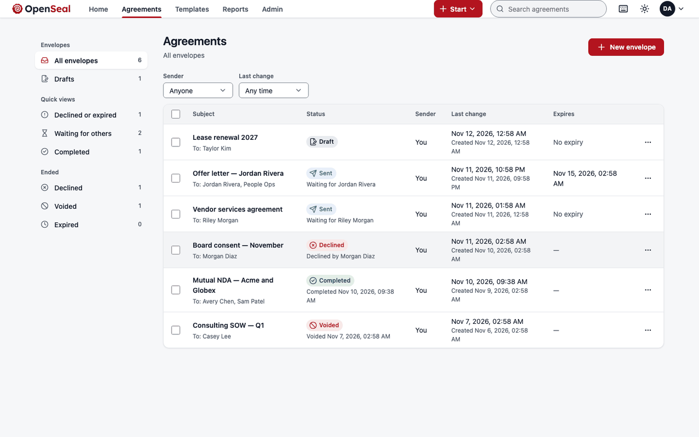
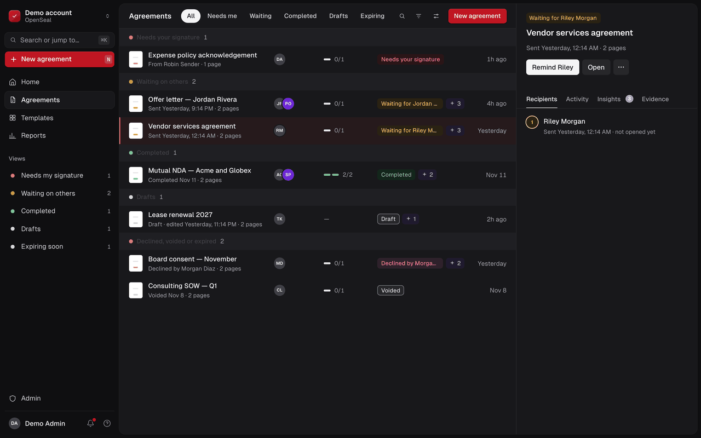
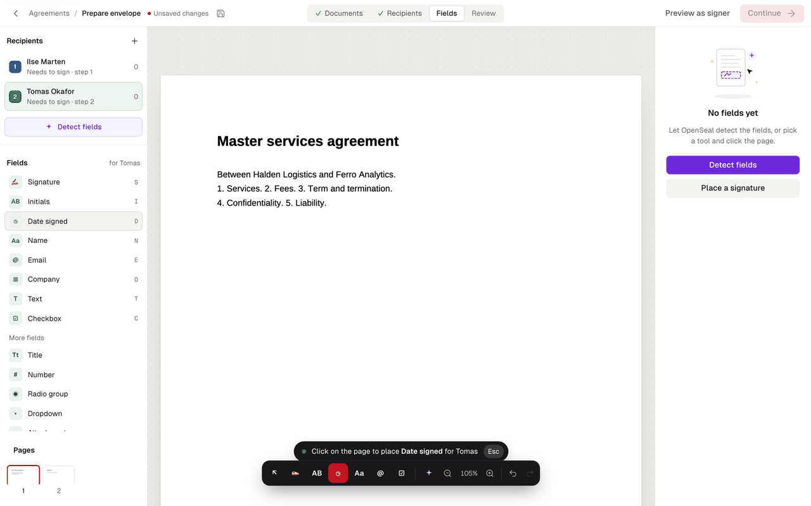
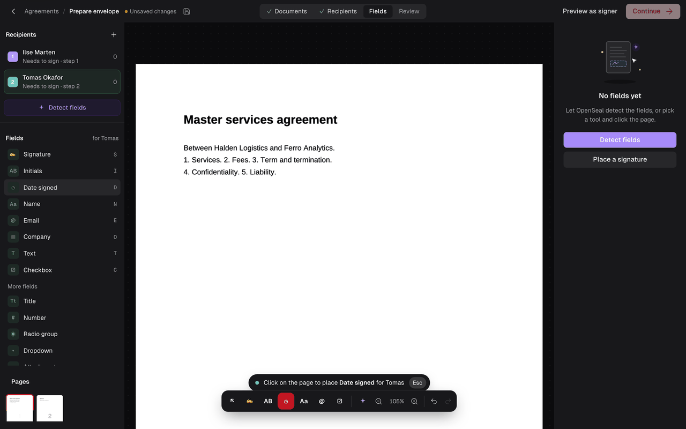
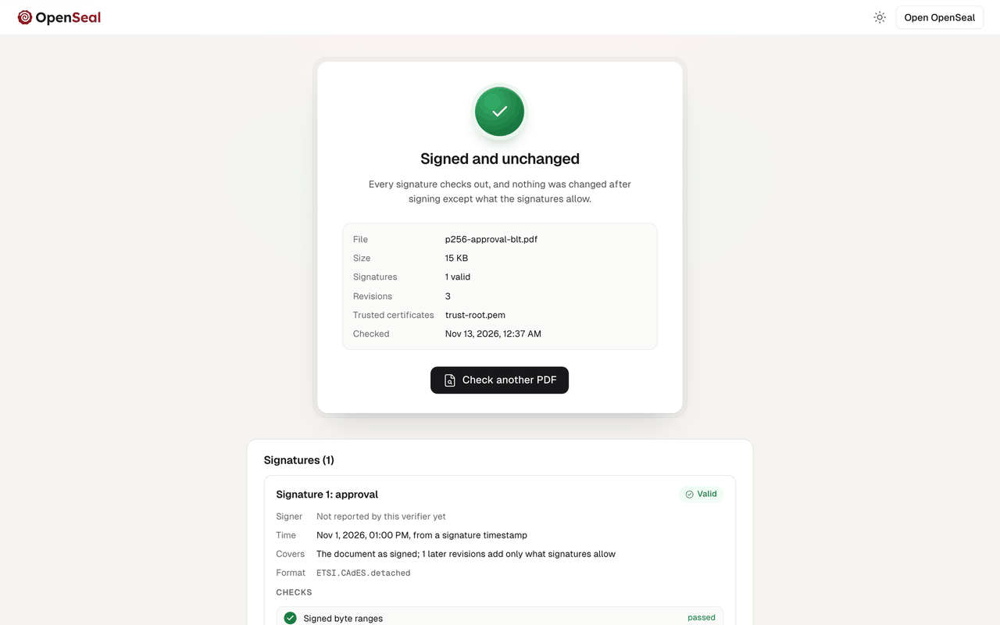
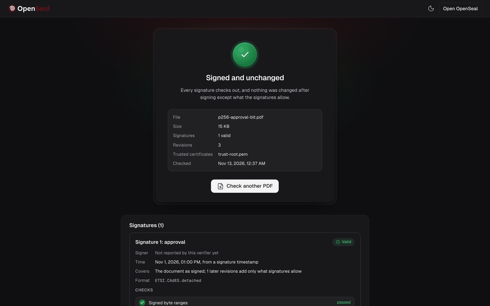
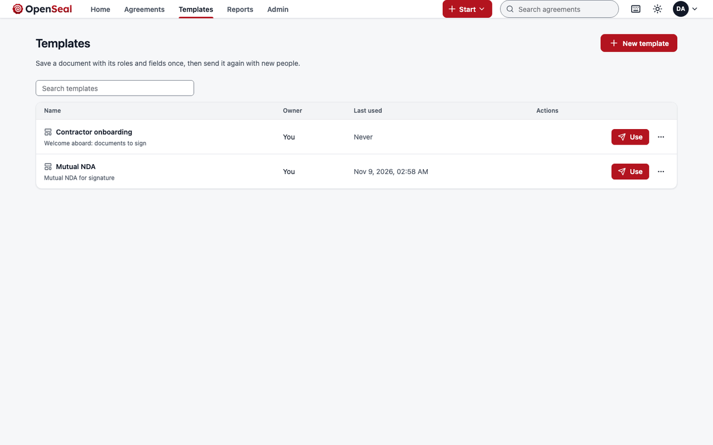
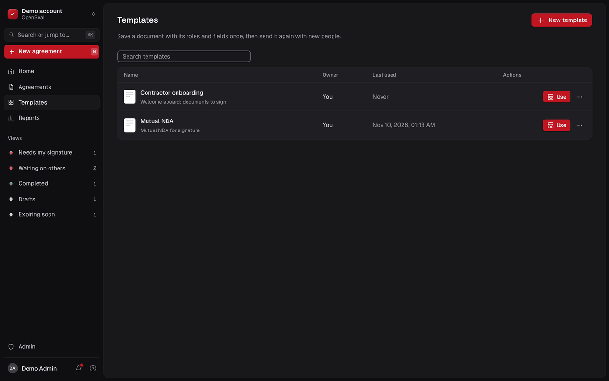
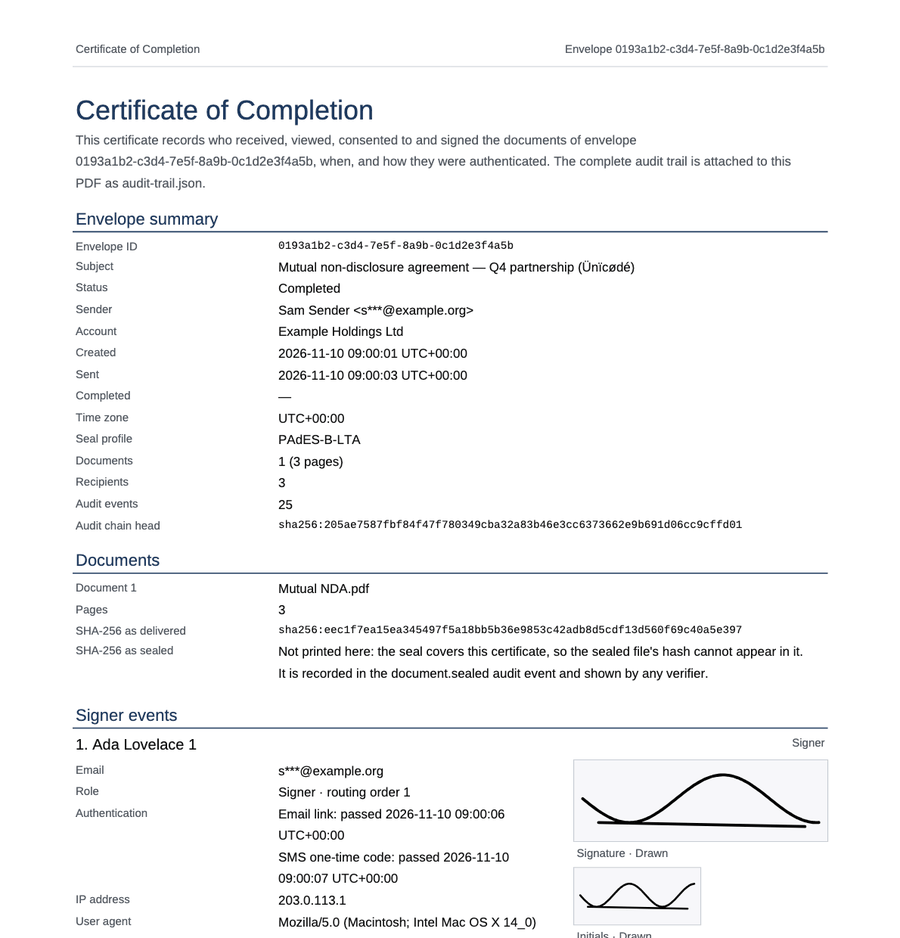

Send in minutes
Upload a PDF, add signers in order or in parallel, place fields and send. Every agreement is tracked from one list.


The open-source DocuSign alternative. Self-host it, embed it, and let anyone verify the sealed PDF offline.
v0.0.1 pre-release is out. Send, sign on a phone or a desktop, and download a sealed PDF with its certificate, on one machine with Docker Compose. It is for evaluation, not yet for production agreements; see the changelog and the roadmap.


Bulk send, conditional fields, SSO, embedding and webhooks are planned for the open core, not a higher tier.
Upload a PDF, add signers in order or in parallel, place fields and send. Every agreement is tracked from one list.


Access code, consent, a guide through every required field, and a signature typed, drawn or uploaded. Designed for WCAG 2.2 AA.


Drop a sealed PDF on the verify page. The check runs in your browser in WebAssembly, and the file is never uploaded.


Save documents, fields and routing once. Fill in the people when you send.


Envelopes, recipients, routing orders, fields and signed webhooks, in the shapes DocuSign and SignNow integrators expect.
# Create and send an envelope in one call
curl https://sign.example.com/api/v1/envelopes \
-H "Authorization: Bearer $OPENSEAL_KEY" \
-H "Idempotency-Key: $(uuidgen)" \
-H "Content-Type: application/json" \
-d @envelope.jsonFour moves for the sender and the signers. The evidence is assembled for you at every step.
Bring a PDF. Scripts, actions and embedded files are stripped before anyone sees it.
Signature, initials, date, name, text and checkbox, dropped on the page or suggested by Detect fields.
Each signer is invited in turn, authenticates, consents and signs on any device.
A PAdES seal with a trusted timestamp, a certificate of completion and the audit trail inside the PDF.
A completed agreement shows which document every party saw, who signed it, when and how. Anyone can check that for decades, with no account and no server.

audit-trail.json embeddedChain head sha256:205ae758…fd01
From each product's public documentation. Where OpenSeal's answer is still on the roadmap, the table says so.
| Question | OpenSeal | DocuSign | SignNow | AGPL projects DocuSeal, Documenso, OpenSign |
|---|---|---|---|---|
| Licence | Apache-2.0 | Proprietary service | Proprietary service | AGPL-3.0 |
| Run it on your own servers | Yes, Docker Compose today | No, vendor cloud | No, vendor cloud | Yes |
| Embed in a closed-source product | Yes, no copyleft | Through their paid API | Through their paid API | AGPL terms apply; some embedding is paid |
| Bulk send, conditional fields, SSO | Open core, no tiers (planned) | Higher plans | Higher plans | Mostly paid editions |
| Verify a completed PDF offline | In-browser verifier and CLI | In a PDF reader | Not documented | Documenso: no verifier; DocuSeal: basic |
| Independent validators in CI | pyHanko and EU DSS | Not published | Not published | Not published |
| Long-term validation (B-LT, B-LTA) | Built; B-T is the default | Not documented | Not documented | Documenso: B-B to B-LTA; others limited |
| Signing key custody | Your HSM via PKCS#11 | Vendor-managed | Vendor-managed | Mostly a .p12 file |
| Audit evidence | Hash-chained trail inside the PDF, plus a certificate | Certificate of completion | Audit trail report | Audit log and certificate pages |
Compiled from public documentation in November 2026; vendors change their products and plans. "Planned" rows are open work on the roadmap. OpenSeal is designed to support e-signature laws; it makes no legal or certification claim.
Work in progress now, in the open, and tracked on the roadmap. None of it is in v0.0.1.
An organization above several workspaces, with organization, workspace and delegated administrators, and a separate console for the operator: plans and limits, keys and certificates, service health. The design is accepted; it is built in stages, aimed at v0.0.2.
Text from scanned pages, "is this one of your templates?", key dates and parties, personal-data finding. Self-hosted models in their own process, off by default, suggestions only: nothing a model says enters the sealed PDF or the audit trail.
A full pass over the editor, the signing page, the agreement lists, templates and admin; then the workflows a DocuSign or SignNow customer would miss, such as folders, an inbox, bulk send and signing links.
One command builds and starts the whole stack on a machine with Docker. Nothing calls home.
# Build and start everything
git clone https://github.com/CasualOffice/openseal
cd openseal
docker compose up -d --build --wait
# Create the first account and administrator
docker compose exec \
-e OPENSEAL_ADMIN_PASSWORD='a long passphrase' \
server casual-sign-server bootstrap \
"Acme" admin@acme.example "Ada Admin"
# Web app http://localhost:8080
# Mail http://localhost:8025Every serious open-source e-signature project is AGPL, which most companies cannot ship inside their products. OpenSeal can go anywhere.
More in the documentation FAQ.
Not yet. v0.0.1 is a pre-release for evaluation: the engine is complete and tested, and the server and web app run end to end on Docker Compose, but the development stack makes its own certificate authority, and the release gates (an external security review, an accessibility audit, validation in Adobe Acrobat and a counsel review) are still ahead. The roadmap shows what comes next.
OpenSeal is designed to support electronic-signature laws such as ESIGN, UETA and eIDAS. Whether a given signature is valid depends on your deployment, its configuration, the jurisdiction and the transaction. Nothing here is legal advice.
Open the verify page from any OpenSeal install, or run it locally; the check runs in your browser and the file stays on your machine. The seal is standard PAdES, so independent tools such as pyHanko and EU DSS validate it too.
Yes. Apache-2.0 allows commercial and proprietary use, embedding, hosting and resale. When you redistribute it, keep the LICENSE and the NOTICE file. See brand and attribution.
Yes: a REST API under /api/v1 with API keys and OAuth client credentials, idempotency keys, ETags, and webhooks signed with the Standard Webhooks scheme. Read the API reference.
In a separate service, keyd, which talks PKCS#11 to your HSM (SoftHSM in the development stack) and signs digests only. File keys are refused outside development.
Docker Compose brings up the server, the worker, the key service, the database, storage, a mail catcher and a timestamp authority.